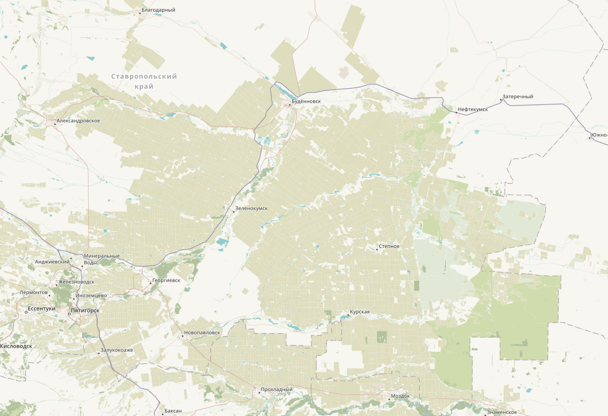

Open steet map или сокращенно OSM
Все началось 8 лет назад, с того, что не было нормальных карт для моего родного села. Начал я искать их, но так как село очень маленькое максимум, что было это главная дорога. Долгие поиски привели меня к тому, что нашел плагин для рисования карт для приложения Navitel было оно очень запутанным. И так я наткнулся на открытый проект OSM. Где можно было редактировать карту онлайн и затем загружать его в Navitel и другие навигаторы. В отличие от редактора Yandex карт или Google здесь можно добавлять любые теги и добавлять любые объекты. За 3 года работы я замапил всю западную часть Ставропольского края. Поучаствовал в проекте по г. Грозный. 